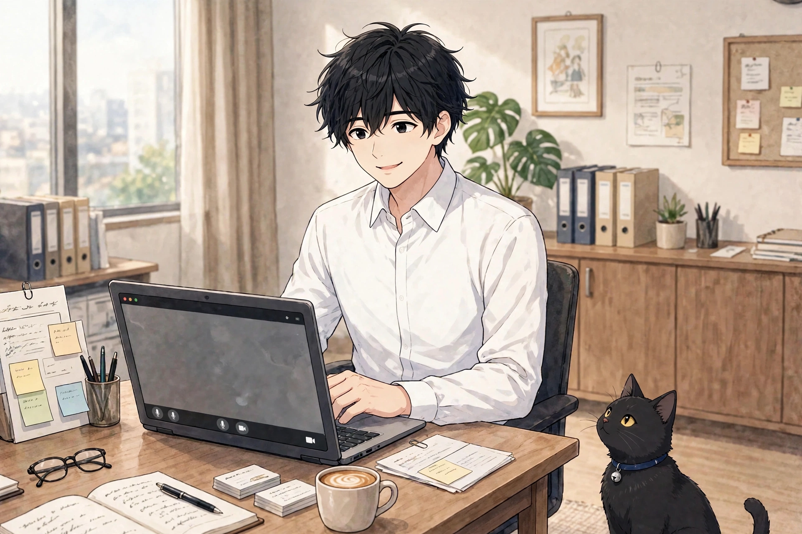

テレワークの画面映えシャツ｜ビデオ会議で清潔感を出す選び方（40代）

ノクス：襟がよれてたら画面でもバレるにゃ。
この記事の商品（先に比較）
| 商品 | 価格（税込） | お店 |
|---|---|---|
| ノーアイロン ワイシャツ3枚セット | 4,935円 | FLiC -フリック- ワイシャツ専門店 |
| 超形態安定 ワイシャツ（長袖） | 2,880円 | ラッキーちくわ |
FLiCのワイシャツは4,935円が3枚セットの価格です（1枚あたり1,645円）。2点とも、価格は2026年11月22日に商品ページで確認したものです。セールで変わることがあります。
基準1：色は明るい無地
ビデオ会議の画面では、白・サックスブルーなどの明るい無地が顔色を明るく見せます。濃い色は画面で暗く沈みやすく、細かい柄は画面でチラついて見えることがあります。迷ったら白の無地から選んでください。
基準2：襟がきちんと立つこと
画面に映るのは胸から上が中心です。襟がへたっていると、それだけで疲れて見えます。ボタンダウンはカジュアル寄りで在宅向き、レギュラーカラーはきちんと感が出ます。どちらも、襟芯がしっかりして洗濯でよれにくいものを選んでください。
基準3：ノーアイロン・形態安定
シワは画面でもはっきり目立ちます。洗って干すだけで着られるノーアイロン・形態安定のシャツなら、会議の直前でも慌てません。ニット素材のシャツは伸縮性があり、長時間の座り仕事でも肩が凝りにくい利点もあります。
あえて推さないもの
- 濃色の無地シャツ（画面で暗く見え、顔色も沈みます）
- シワの目立つ綿100%のシャツ（アイロンなしでは画面で目立ちます）
- 襟がよれたシャツ（上半身だけの画面では特に目立ちます）
背景と照明でさらに変わる画面映え
シャツの色だけでなく、背景との組み合わせでも印象は変わります。白い壁の前で白シャツだと輪郭が溶けて見えることがあるので、背景が白っぽい部屋ではサックスブルーなど薄い色のシャツが映えます。逆に背景が暗い部屋では白シャツが顔まわりを明るく見せます。照明は顔の正面から当てるのが基本で、窓を背にすると逆光で顔が暗くなります。会議が多い日は、開始前にカメラのプレビューで一度確認してみてください。
襟の形と顔映りの関係
- レギュラーカラー：きちんと感が最も出ます。取引先との会議向きです
- ボタンダウン：襟が固定されて型崩れしにくく、在宅のカジュアルな会議向きです
- ワイドカラー：顔まわりがすっきり見えますが、カジュアルに見えやすいので社内会議向きです
どの形でも共通するのは、襟が立っていることです。洗濯後に襟の形を整えて干すだけで、へたりがかなり防げます。
会議前の1分チェック
- 襟が左右対称に立っているか
- 胸元にシワや食べこぼしの汚れがないか
- 第1ボタンの開け具合（開けすぎるとだらしく見えます）
- 背景に洗濯物や私物が映り込んでいないか
ローテーションの組み方
毎日会議がある人は、白2枚＋サックスブルー1枚の3枚ローテが組みやすい構成です。白は印象が安定し、サックスブルーは白背景の日に使えます。形態安定のものなら洗濯の手間も少なく、1週間を無理なく回せます。
この記事の基準に合う商品
特徴：ノーアイロン・形態安定の長袖シャツ2点。FLiCは3枚セットで色の組み合わせも選べます。


あわせて読みたい：40代メンズ 清潔感シャツの選び方／メンズトップス種類別ガイド／デスクワーク後の首・肩のこわばりリセット